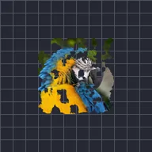

کھردرے کنارے

شور کے ساتھ ٹھوس حصوں کے کناروں کو کھا جاتا ہے، تاکہ پھٹا ہوا، گھسا ہوا یا جلا ہوا خاکہ بنے۔
سیٹنگز
| سیٹنگ | قسم | رینج | ڈیفالٹ |
|---|---|---|---|
| بارڈر | نمبر | 0 سے 300 تک | 12 |
| کھردرا پن | نمبر | 0 سے 1 تک | 0.6 |
| اسکیل | نمبر | 0.05 سے 20 تک | 1 |
| ایوولوشن | نمبر | -50 سے 50 تک | 0 |
| سیڈ | نمبر | 0 سے 5 تک | 0 |
| آکٹیوز | نمبر | 1 سے 9 تک | 6 |